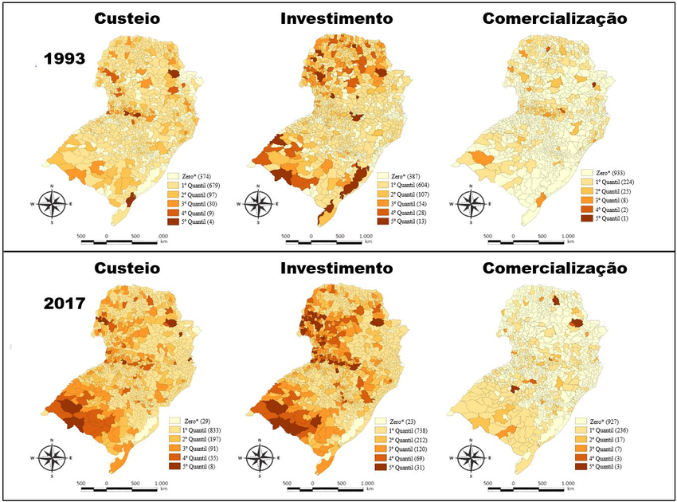
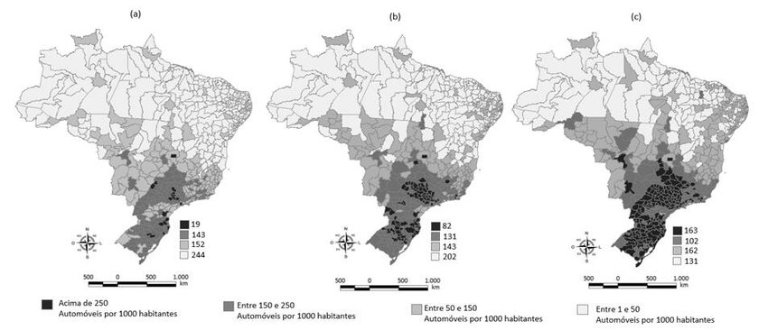

My research integrates quantitative methods applied to agribusiness, innovation, and sustainability, with a focus on the use of satellite imagery for monitoring and analysis. The approaches include spatiotemporal statistics, spatial econometrics, multivariate analysis, machine learning, and clustering techniques.
Utilizing satellite imagery and spatiotemporal data to monitor land use changes, agricultural productivity, and deforestation, identifying patterns and trends in the expansion of agribusiness.
Analyzing the socioeconomic and environmental impacts of these dynamics on regional development, providing evidence to support public policies and sustainable innovation strategies.
Analysis of the Distribution of Livestock Rural Credit in the Southern Region of Brazil: from 1993 to 2022
This study aims to analyze the regional distribution of rural credit for livestock in the municipalities of the Southern region of Brazil from 1993 to 2022, focusing on funding, investment, and commercialization purposes. The research uses data from the Institute for Applied Economic Research (IPEA), applying a quantitative approach to examine the evolution of credit for the three purposes. The results show that, despite the expansion of funding and investment credit, its distribution remains unequal, with a significant concentration of resources in certain regions, such as the south of Rio Grande do Sul. In contrast, credit for commercialization remained stable but with less territorial coverage. The research concludes that there are regional disparities among the southern states and their five cities with the highest credit demand for the three purposes, even though the concentration of credit has decreased over the analyzed period.

Distribution of livestock credit differentiated by purpose during the trienniums of 1993 and 2017
ARAÚJO, P. F. C. (1983) O Crédito Rural e sua Distribuição no Brasil. Revista Estudos Econômicos, 13(2), 323–348.
ARAGÃO, A.; CONTINI, E. (2022) O agro no Brasil e no mundo: um panorama do período de 2000 a 2021. EMBRAPA.
The Demand for Automobiles in Brazil: An Analysis from Regional Effects

Brazilian distribution of automobile demand per 1000 inhabitants in the years (a) 2006, (b) 2009, and (c) 2013
This work analyzed the demand for automobiles per thousand inhabitants in Brazilian microregions between 2004 and 2015, through absolute and conditional convergence, and the convergence club hypothesis. It also evaluated the regional effects of the IPI (Industrialized Products Tax) reduction on automobile consumption by comparing the policy period (2008-2014) with the previous one (2004-2007), using Exploratory Spatial Data Analysis (ESDA) and Spatial Econometrics. The results indicated that microregions with lower initial demand (2004-2007) showed higher growth rates in the subsequent period, suggesting a process of territorial homogenization. Two convergence clubs, named North and South, were identified with distinct characteristics. The structural variables were statistically significant at 1%, corroborating previous studies (Cintra, 2014; Haddad, 2015; Lucinda, 2017) that point to positive externalities of the increased vehicle fleet on regional dynamism.
BATISTELLA, M.; BRONDIZIO, E. S. (2004). Uma estratégia integrada de monitoramento e análise do impacto ambiental de assentamentos rurais na Amazônia. In: Monitoramento e Contabilização de Impactos Ambientais. Campinas: Unicamp.
BAUMGARTEN JR, L. A. (1972). Demanda de automóveis no Brasil. Revista Brasileira de Economia, 26(2), 203-297.
Relationship of Rural Credit in the Export of Beef from Brazil
The Brazilian agricultural sector plays a crucial role in the country's economy, driven by its vast expanse of fertile land, favorable climatic conditions, and abundance of natural resources. Over the last few decades, Brazil has established itself as one of the world's leading agricultural producers, exporting a variety of commodities such as soybeans, corn, coffee, sugar, and beef. The objective of this article is to assertively verify the link between rural credit and the growing export of beef in Brazilian municipalities from 1993 to 2020. For this, graphical, statistical, and visually plotted map analysis will be used. This study provides a correlation between the researched topics, showing a positive trend given the analysis performed.
COSTA, E. M., & VIEIRA FILHO, J. E. R. (2018). Choque de oferta no crédito rural e seu impacto produtivo na agricultura brasileira. Políticas públicas: avaliando mais de meio trilhão de reais em gastos públicos, 1, 207–224.
MARIA, A. C., et al. (2021). Crédito rural e o desempenho da agricultura no Brasil. Revista Brasileira de Engenharia de Biossistemas, 15(1), 168–189.
Spatial Distribution of Innovation in the Southern Region of Brazil from 2005 to 2015
This work analyzed the spatial distribution of technological innovation in the southern region of Brazil (PR, SC, and RS) in 2005 and 2015, focusing on the impact of state innovation laws created after 2005. The number of patents was used as a proxy to measure the effort in technological development. Exploratory Spatial Data Analysis (ESDA) revealed a positive spatial autocorrelation, indicating that innovation is not randomly distributed. Bivariate analysis pointed to a spatial relationship between innovation and other factors. A loss of relevance for Paraná compared to RS and SC was observed, with the latter being the main hub of significant clusters. It is concluded that the states that adopted innovation laws earlier showed better performance in patent generation.
Albuquerque, E., Simões, R., Baessa, A., Campolina, B., & Silva, L. A. (2002). A distribuição espacial da produção científica e tecnológica brasileira: uma descrição de estatística de produção local de patentes e artigos científicos. Revista Brasileira de Inovação, 1(2), 225-251.
Gonçalves, E. (2007). A distribuição espacial da atividade inovadora brasileira: uma análise exploratória. Estudos Econômicos, 37(2), 405-433.